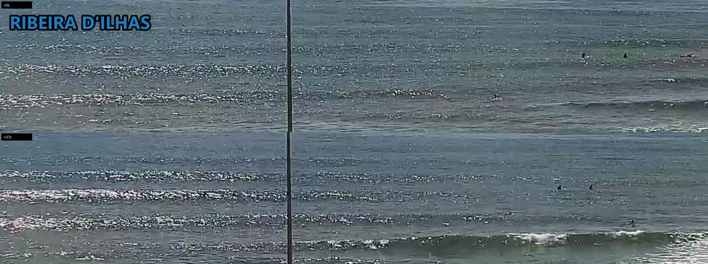
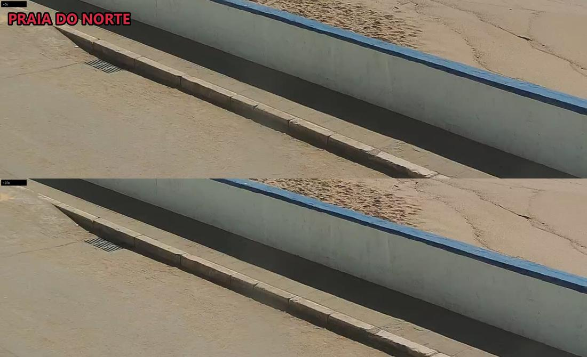
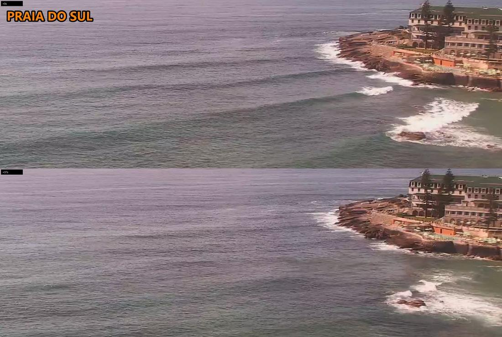
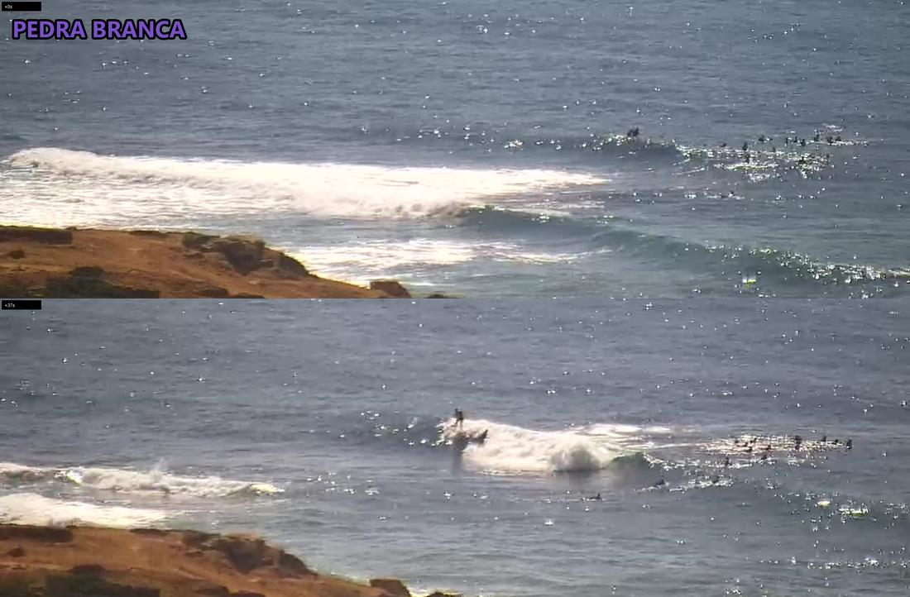
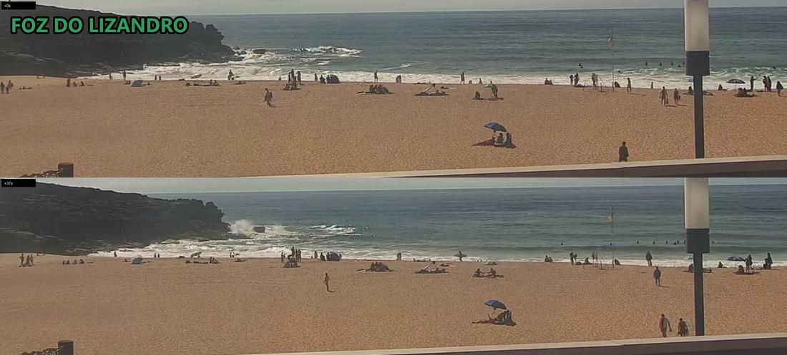

Ribeira
FAIR0.6–0.9 m
8 surfers
small textured waist-high lines peeling on the reef, bumpy in the cross-shore; ~8 spread across the lineup in the contact sheet (approx), ~20 on the sand and promenade
afternoon slot · run 70
Ribeira FAIR 0.6-0.9m ▪️>> 🔹>> ▫️>>
Norte POOR 0.6-0.9m ▪️>> ▫️>> 🔸>>
Sul POOR 0.6-0.9m ▪️>> 🔹>> ▫️>> 🔸>>
Pedra POOR 0.6-0.9m ▪️>> 🔹>>
Lizandro POOR 0.6-0.9m ▪️>> 🔹>> ▫️>> 🔸>>
2. CAM
Ribeira small textured lines peeling on the reef · ~8 surfers
Norte 🚫 cam down (pointed at the sea wall)
Sul rolling through, breaking only on the rocks · 0 surfers
Pedra peeling walls, riders up · ~8 surfers
Lizandro mushy shorebreak mostly closing out · ~5 surfers
3. VERDICT
Go this evening, Ribeira or Pedra: both have people riding despite the ratings, and the wind holds at 11kt instead of building.
NEXT 24H Ribeira: 18:00 FAIR · Wed 07:00 FAIR · Wed 11:00 FAIR
⭐ Tue 16:00-20:00 Ribeira FAIR 0.6-0.9m 11kt NNW: the evening is the window, tomorrow dawn the wind builds to 28-37km/h N
NEXT CHECK 18:30 the sunset call, and whether the NNW eases off the lineup
0.6–0.9 m
8 surfers
small textured waist-high lines peeling on the reef, bumpy in the cross-shore; ~8 spread across the lineup in the contact sheet (approx), ~20 on the sand and promenade
0.6–0.9 m
surfers unclear
cam still framed on the promenade and sea wall, only a sliver of shorebreak in the top corner; dead framing, not an empty lineup
0.6–0.9 m
0 surfers
swell rolling through unbroken, breaking only on the rock shelf by the point; detail and crowd crops both scanned, nobody out
0.6–0.9 m
8 surfers
peeling walls with a green face, two riders clearly up in the crowd and detail crops; better than the POOR rating, ~8 in the pack (approx)
0.6–0.9 m
5 surfers
mushy shorebreak mostly closing out on the sand; ~5 in the water (approx, cam too wide to separate surfers from bathers), ~40 on the beach




